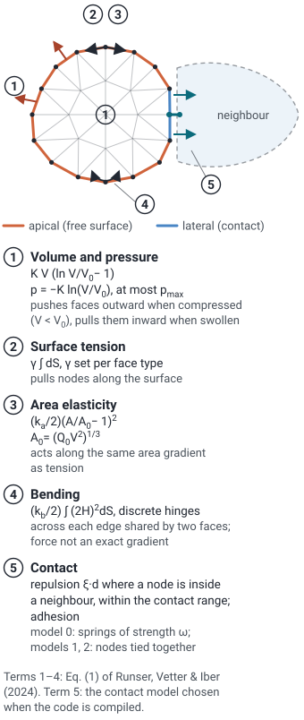
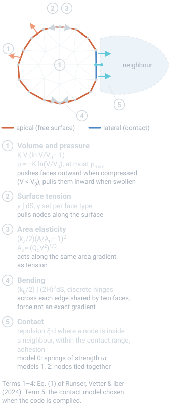

Cell mechanics#
Each cell resists changes of its volume, regulates its surface area, is pulled together by cortical surface tension and, optionally, resists bending of its surface. This chapter gives the energy that encodes these effects, the discrete nodal forces that SimuCell3D 2.1 computes from it, and the parameters that control them. Contact forces between cells are the subject of Contact between cells.
Energy#
Runser, Vetter & Iber (2024), Eq. (1), define the potential energy of one cell as
where \(V\) and \(A\) are the volume and surface area of the cell, \(V_0\) and \(A_0\) their target values, \(K\) the bulk modulus, \(k_a\) the area elasticity modulus, \(\gamma\) the surface tension, \(k_b\) the bending modulus and \(H\) the local mean curvature of the surface \(\partial\Omega\). The first term is the work of a net internal pressure of a slightly compressible cytoplasm. The second lets the cell regulate its area. The surface integral models the tension of the actomyosin cortex and its resistance to bending. \(\gamma\) and \(k_b\) are properties of the face type, so they can differ between apical, lateral and basal membrane; \(K\), \(k_a\) and the target values are properties of the cell type.


The energy terms of one cell: terms 1 to 4 are Eq. (1) of Runser, Vetter & Iber (2024), (1), and term 5 is the contact model chosen at compile time (Contact between cells).#


The energy terms of one cell: terms 1 to 4 are Eq. (1) of Runser, Vetter & Iber (2024), (1), and term 5 is the contact model chosen at compile time (Contact between cells).#
The nodal forces are the negative gradients of the discretised terms with respect to the node positions \(\mathbf r_i\), except for bending, whose implemented force is not an exact gradient (see the section on bending below). They are evaluated once per iteration, after mesh refinement and contact detection, in the order of the following sections.
Discrete geometry#
A face \(f\) has nodes \((i, j, k)\) in its winding order, which is counterclockwise seen from outside the cell, an area \(A_f\) and an outward unit normal \(\hat{\mathbf n}_f\). The cell area is \(A = \sum_f A_f\). The volume is computed with the divergence theorem (the “shoelace” formula of the paper’s Methods):
The signed volume \(V_s\) is positive for a correctly oriented surface. 2.1 keeps it so that the safeguards can detect a cell that has turned inside out (Safeguards).
Pressure#
The pressure difference between the cytoplasm and the exterior is
so a compressed cell (\(V < V_0\)) has a positive pressure. The cap \(p_{\max}\)
(max_inner_pressure) limits only the positive pressure of a compressed cell; the negative
pressure of a swollen cell is not limited. With \(K = 0\) the pressure is set to 0 and the cell
has no volume regulation (the shipped files use this for the ECM).
The pressure acts on each face as \(p A_f \hat{\mathbf n}_f\), shared equally by its three nodes:
At the start of a run the target volume of every cell is set to
\(V_0 = V\,\exp(p_0/K)\), which gives the pressure \(p_0\). The parameter file has no tag for \(p_0\),
so it is 0 and \(V_0\) is the initial volume, unless a cell type’s initial_pressure_ is set
through the Python interface (Python interface). During the run \(V_0\) changes only through growth and division
(Growth, division and cell death).
Surface tension and area elasticity#
Surface tension and area elasticity both act along the area gradient of each face, so they are computed together. For a face with nodes \((i, j, k)\) in winding order,
and the force on node \(i\) is
with \(\gamma_f\) the surface tension of the face type of \(f\). The target area follows from the isoperimetric ratio \(Q = A^3/V^2\):
where \(Q_0\) is target_isoperimetric_ratio. A sphere has the smallest possible ratio,
\(Q = 36\pi \approx 113\); larger values of \(Q_0\) let the cell keep more area than a sphere of
the same volume, for example to take a columnar shape. \(A_0\) is recomputed at every iteration.
Note
The paper’s Methods couple \(A_0\) to the target volume, \(A_0 = (Q_0 V_0^2)^{1/3}\). The code uses the current volume \(V\). The force (5) treats \(A_0\) as a constant, in both the paper and the code.
Bending#
Bending uses the discrete hinge energy of Wardetzky et al. (2007), as in the paper’s Methods. Every edge \(e\) is shared by two faces \(a\) and \(b\), which form a “diamond” of four nodes: the edge nodes \(i\), \(j\) and the opposite nodes \(k\) (in \(a\)) and \(l\) (in \(b\)). With \(\mathbf e = \mathbf r_j - \mathbf r_i\), \(A_e = A_a + A_b\), and \(\bar k_b\) the mean bending modulus of the two face types,
where \(\mathbf e_{il} = \mathbf r_l - \mathbf r_i\) and the sign is taken as \(+1\) when \(\hat{\mathbf n}_a \cdot \mathbf e_{il} = 0\). For a flat hinge \(\theta_e = \pi\) and the term vanishes; the sign separates convex from concave hinges. The force on each of the four nodes \(q \in \{i, j, k, l\}\) implemented in 2.1 is
summed over all hinges that contain \(q\). The gradients of \(\theta_e\) and of \(\lVert\mathbf e\rVert^2/A_e\) follow Wardetzky et al. (2007).
Note
Prefactor. The paper’s Methods give the same expression with a prefactor of 2, which
corresponds to (7). The code (1.0 and 2.1) uses 3. The difference lies in
the Methods’ discrete formula, not in the code: (7) leaves out the area
weight \(A_e/3\) of the discrete-shells energy, and on regular, sphere-like meshes it gives about
2/3 of the bending term of (1). On icospheres of 42 to 10,242 nodes the sum
\(\sum_e \lVert\mathbf e\rVert^2/A_e\,(2\cos(\theta_e/2))^2\) is 17.0 to 17.1, so 1.5 times it is
within 2% of \(\tfrac12\int (2H)^2\,\mathrm dS = 8\pi\). A prefactor of 3 therefore matches the
bending modulus of Eq. (1) and of the paper’s Table 2; a prefactor of 2 would make cells about a
third softer. The bending_energy written to the output is (7), about 2/3
of the bending term of Eq. (1). (This correspondence holds on regular meshes; the discrete
energy does not converge to the continuum one on general irregular meshes.)
Not an exact gradient. The implemented force is not the gradient of (7) or of any multiple of it. The computation of \(\nabla_q \theta_e\) has two defects, both present since 1.0: the cotangent terms of face \(b\) at the edge nodes use the normal of face \(a\) instead of that of \(b\); and the edge direction is taken from the order of the node ids rather than from the winding of face \(a\), so the tangent and rotation conventions are wrong for about half of the hinges. The forces on a hinge then do not sum to zero, and the error grows with the fold angle and depends on the node numbering. On a test sphere of 300 to 1416 nodes, the best fit of the force to the finite-difference gradient of (7) is 1.49 to 1.59 times the gradient, with a relative residual of 0.26 to 0.40; per node the ratio ranges from 0.4 to 2.1 (5th to 95th percentile). With both defects corrected, the force would be exactly 1.5 times the gradient. 2.1 leaves the bending force as in 1.0, so that results stay comparable with the published ones; this is listed as a known issue in Release 2.1.
A hinge contributes no force when:
the angle between the two face normals exceeds 135 degrees (a fold sharper than 45 degrees);
the edge or one of the two faces has zero length or area, or one of the four angles of the diamond at the edge is zero;
(2.1) one of the two triangles is a sliver: its area is below \(10^{-4}\,l_{\max,f}^2\), where \(l_{\max,f}\) is its longest edge (an equilateral triangle has \(0.433\,l^2\)).
In addition, 2.1 caps \(\lvert\cot\alpha\rvert\) at 1000 in the gradient of \(\theta_e\), where \(\alpha\) are the angles of the diamond at the edge nodes. If every face type of a cell type has \(k_b = 0\), the bending computation is skipped for its cells.
Changed in version 2.1: On a nearly flat triangle the \(1/A\) and \(\cot\alpha\) factors of the bending force could exceed their normal size by more than a factor of \(10^6\) and move a node by centimetres in one time step. The sliver test and the cotangent cap remove these hinges. A mesh maintained by the local mesh refiner has triangles far above the sliver threshold, so well-shaped hinges give exactly the same force as in 1.0.
Angle regularisation#
SimuCell3D can add a force, not part of the paper’s model, that drives every angle \(\alpha\) of every triangle towards 60 degrees:
which is the negative gradient of \(\tfrac{k_r}{2}\sum (\alpha - \pi/3)^2\). A face with an angle
below 10 degrees or above 170 degrees is skipped. \(k_r\) is angle_regularization_factor
(unit J); every shipped parameter file sets it to 0.
Parameters#
XML tag |
Symbol |
Section |
Unit |
Meaning |
|---|---|---|---|---|
|
\(K\) |
|
Pa |
Volume stiffness; 0 disables the pressure |
|
\(p_{\max}\) |
|
Pa |
Upper bound of \(p\); |
|
\(k_a\) |
|
J |
Area elasticity modulus |
|
\(Q_0\) |
|
1 |
Sets \(A_0\) by (6); must be positive |
|
\(k_r\) |
|
J |
Angle regularisation strength; 0 disables it |
|
\(\gamma\) |
|
N/m |
Cortical surface tension |
|
\(k_b\) |
|
J |
Bending modulus |
The comments in the shipped parameter files give area_elasticity_modulus the dimension
M/(T² L²); from (1) it is an energy, in J (see Parameter file reference).
The mass density, which sets the node mass, is described in Time integration.
Practical guidance#
Values in the shipped files. The epithelial cell types use \(K = 2.5\times10^{3}\) Pa, \(Q_0 = 250\), a basal surface tension of \(10^{-3}\) N/m, an apical one of \(10^{-3}\) N/m (except
fig3e_monolayer.xml, \(10^{-5}\) N/m) and a lower lateral one: \(4\times10^{-4}\) N/m in the vesicle and tube files, \(5\times10^{-4}\) N/m in the sheet file and \(8\times10^{-4}\) N/m inparameters_default_*.xml,parameters_paper_exact*.xmlandlongrun_fast_growth.xml. The vesicle, sheet, tube,fig3e_*andparameters_default_overdamped.xmlfiles set \(k_a = 0\); the others use \(k_a = 10^{-15}\) J, the value of the paper’s Table 2. Onlylongrun_fast_growth.xmlenables bending, with the Table 2 value \(k_b = 2\times10^{-18}\) J; all other files set \(k_b = 0\).The pressure cap cannot stabilise a swelling or exploding cell: it bounds only the pressure of a compressed cell.
With \(k_a > 0\), \(Q_0\) below \(36\pi\) asks for less area than any closed surface can have, so the area term then always contracts the cell. The lumen, ECM, nucleus and static cell types of the shipped files set \(Q_0 = 1\) together with \(k_a = 0\), which makes \(Q_0\) irrelevant.
The ratio \(\gamma / (K l)\), with \(l\) a cell length, compares surface tension with volume stiffness. Runser, Vetter & Iber (2024) use this normalised surface tension \(\tilde\gamma\) to describe the transition from a monolayer to a multilayer (Monolayer and multilayer epithelia).
Note
Energies written to the output (see Output files) are diagnostics and do not all equal
the terms of (1): surface_tension_energy is \(\tfrac12\sum_f \gamma_f A_f\),
half of the surface tension energy; pressure_energy is \(\lvert K V(\ln(V/V_0) - 1)\rvert\);
bending_energy is (7), about 2/3 of the bending term (see the note on
the bending prefactor);
membrane_elasticity_energy is the area term. In 1.0 membrane_elasticity_energy was always
written as 0.
See also
Contact between cells for the forces between cells.
Growth, division and cell death for how \(V_0\) changes.
Wardetzky, M., Bergou, M., Harmon, D., Zorin, D. & Grinspun, E. Discrete quadratic curvature energies. Comput. Aided Geom. Des. 24, 499-518 (2007).
Cell meshes for the
cellclass.